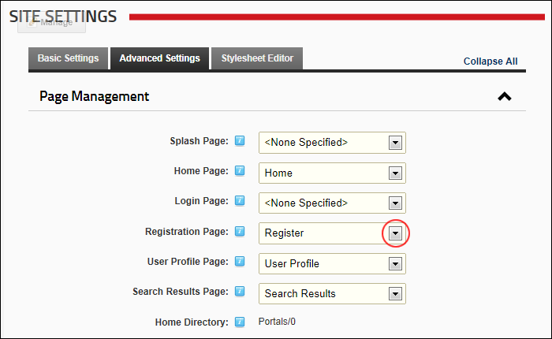

Setting a Custom Registration Page
How to set a custom registration page for this site. This page enables visitors to register for a new account.
Important. The page that you set as the registration page must have the Add New User module added to it. Ensure permissions to view the page and the module are granted to all users.
- Navigate to Admin >
 Site Settings.
Site Settings.
- Optional. Click on the country flag icon associated with the culture (language) to be updated. This field only displays when multiple languages are enabled. See "Viewing a Site in a Secondary Language"
- Select the Advanced Settings tab.
- Expand the Page Management section.
- At Registration Page, select the registration page you created from the drop down list. E.g. Register

-
Click the Update button.